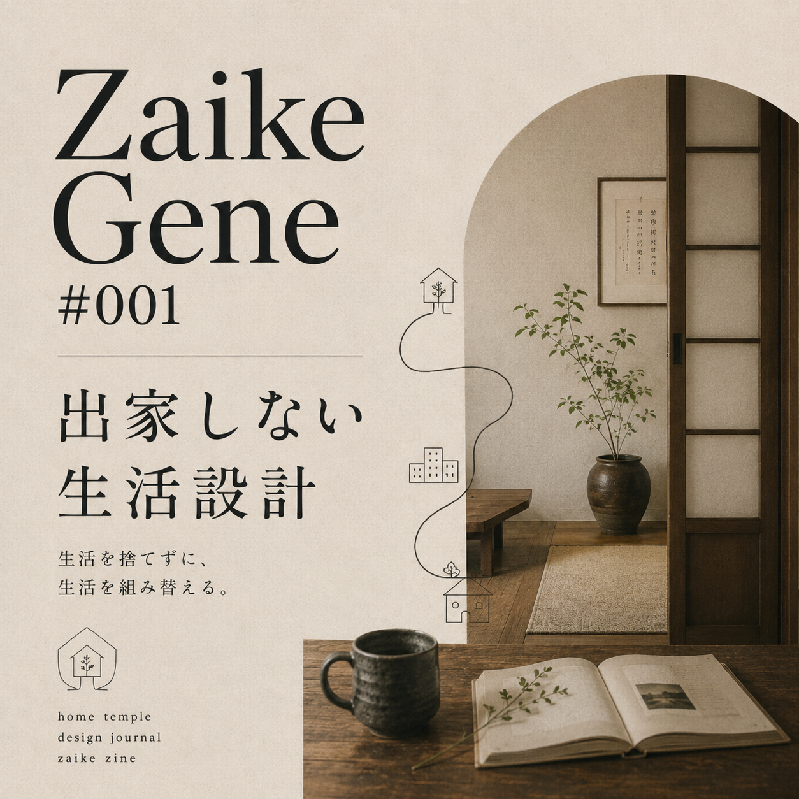
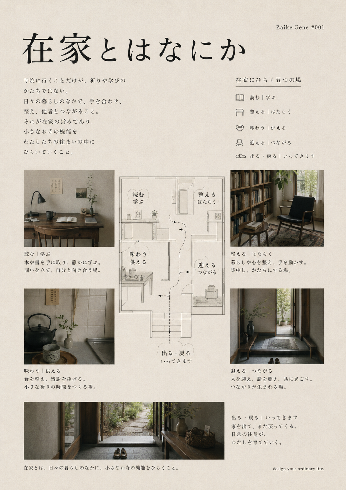
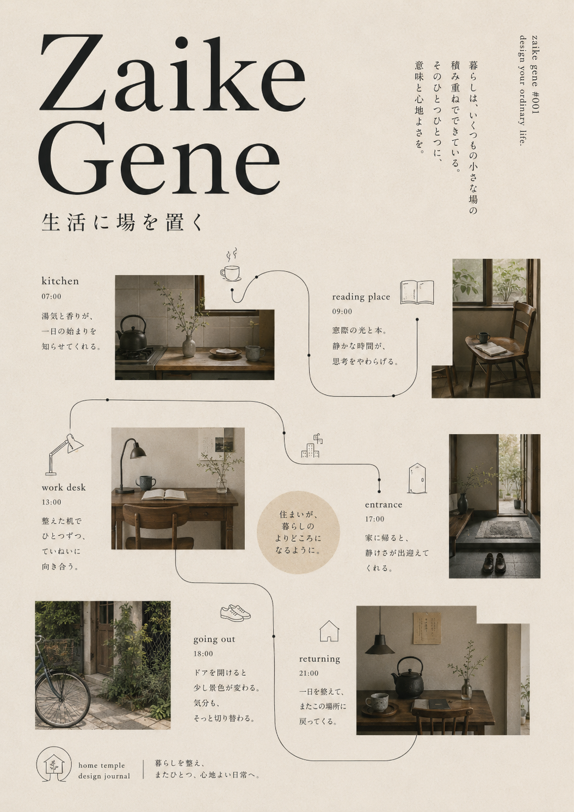

Zaike Gene は、出家しない生活設計のための小さな記録です。
ここでいう在家とは、宗教的な立場というより、生活の側に残るということ。飯を食べる。眠る。水を飲む。部屋を整える。外に出る。帰ってくる。読む。書く。働く。人と関わる。ときどき迷う。
その全部を捨てて、どこか別の場所で清らかになるのではない。散らかりやすい生活の中に、戻れる場を少しずつ置いていく。
生活を捨てずに、生活を組み替えるための在家ZINE。山に籠らない。寺にも入りきらない。けれど、生活に飲まれたままでもいない。

Zaike Gene は、出家しない生活設計のための小さな記録です。
ここでいう在家とは、宗教的な立場というより、生活の側に残るということ。飯を食べる。眠る。水を飲む。部屋を整える。外に出る。帰ってくる。読む。書く。働く。人と関わる。ときどき迷う。
その全部を捨てて、どこか別の場所で清らかになるのではない。散らかりやすい生活の中に、戻れる場を少しずつ置いていく。
本や書を手に取り、静かに学ぶ。問いを立て、自分と向き合う場。
暮らしや心を整え、手を動かす。集中し、かたちにする場。
食を整え、感謝を挿入する。小さな祈りの時間をつくる場。
人を迎え、話を聴き、共に過ごす。つながりが生まれる場。
家を出て、また戻ってくる。日常の往還が、生活を育てていく。


